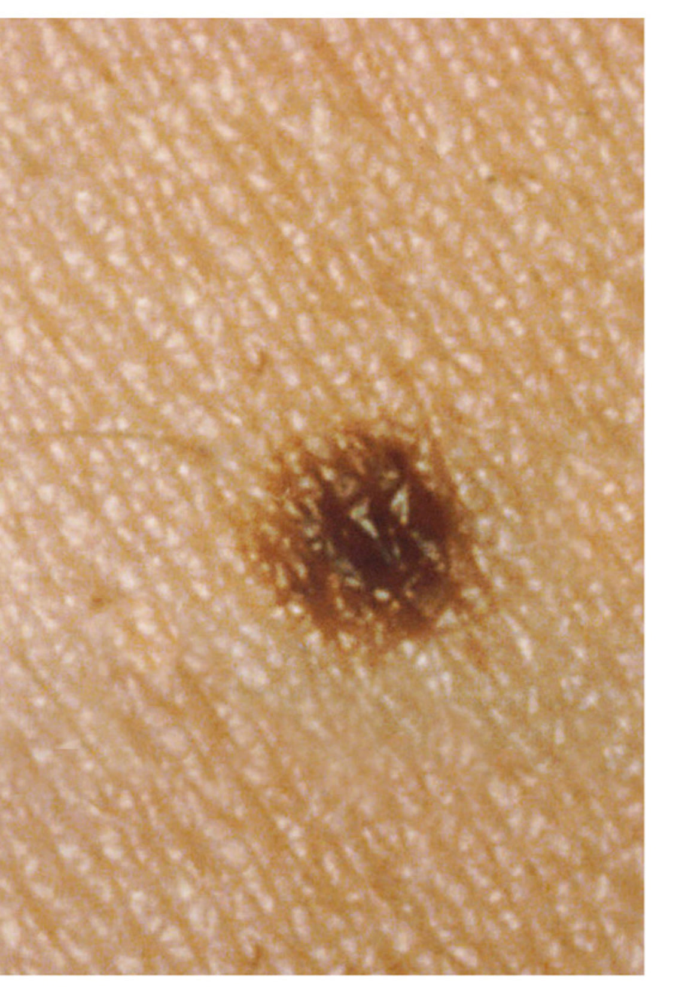

Baseline photo

Real reference photo
Private by default
Save repeatable photos, review visible differences over time and keep a private record you can show a dermatologist.

Match the light, distance and camera position for a useful comparison.